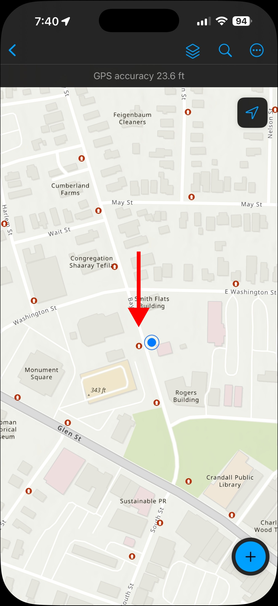
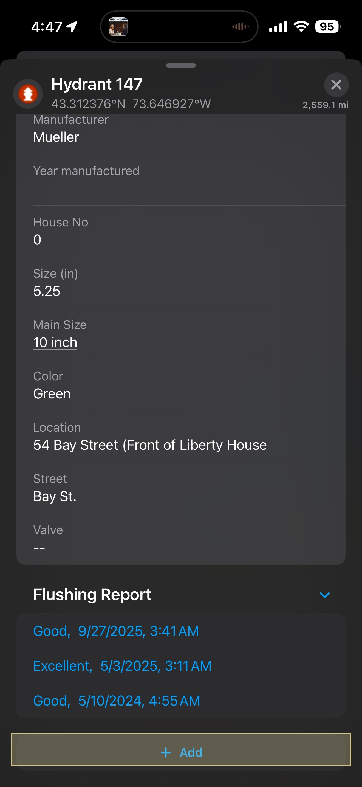
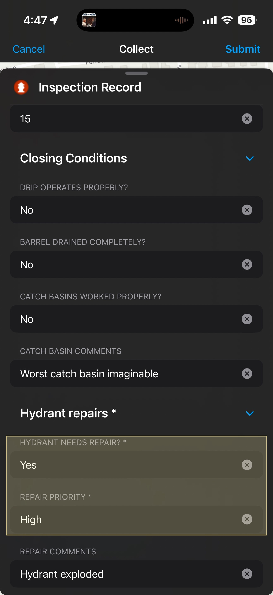
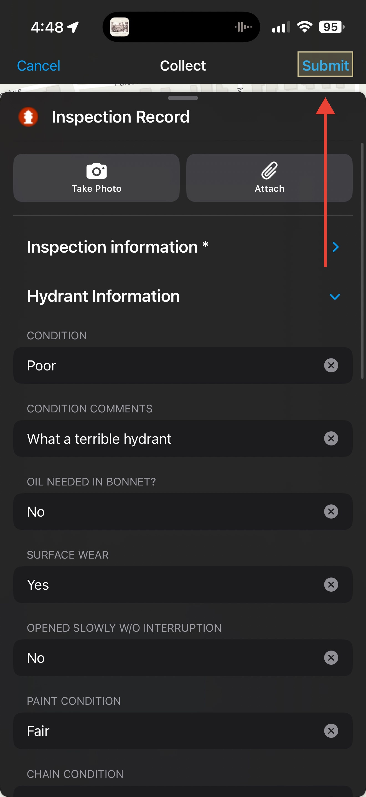

Overview
Many field crew members were new to the hydrant flushing process and struggled to efficiently clear the system during biannual flushings. Two teams simultaneously flushed from opposite sides of the city and to properly remove build ups, they needed to be coordinated and in communication.
Create a new process to coordinate teams in the field and keep managers informed on flushings happening in real time. This process must keep records associated with each hydrant to track flushing information over time and observe changes in each flushing period. Crew members will collect data on hydrant condition for future repairs. Repair information will be pushed to a new dashboard management can use to delegate field operations.
I symbolized city data as red hydrants on a map and added an inspection table connected to the layer with a one to many relationship class. I created a layer from the inspection table and symbolized points as green hydrants. Using Field Maps Designer I created a form for the inspection layer that simplifies flushing and repair fields. After crew members submit a record, the inspection layer displays over the hydrant layer as green hydrants. If a hydrant is damaged, new fields pop up prompting crew members for the type of damage and priority of the repair. This information is pushed to the hydrant repair dashboard where management can download and create work orders for repairs.




I led two training sessions for water and road crews to use the Field Maps Mobile during the flushing and repair process. Images were embedded in written instructions with close attention to detail and ensuring simplistic directions for non-GIS users.
50% reduction in flush time. Two editable web maps for hydrant flushings and repairs. New simplified process to maintain current and quality data. Two departmental crews trained to use Field Maps Mobile. One hydrant repair dashboard designed for actionable decision-making.